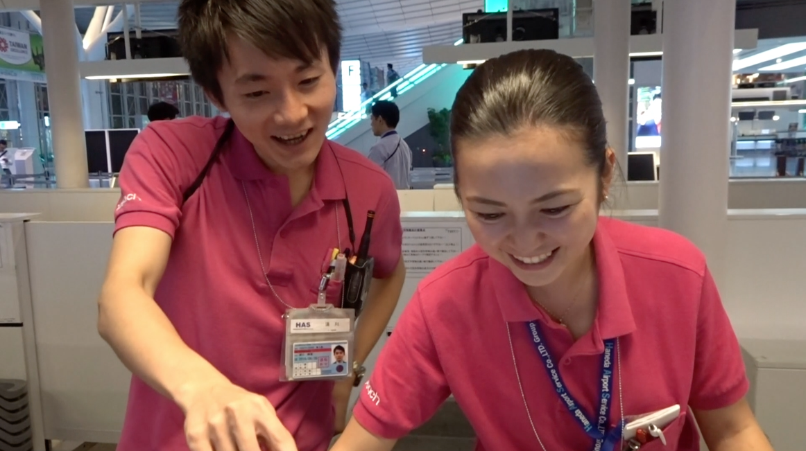
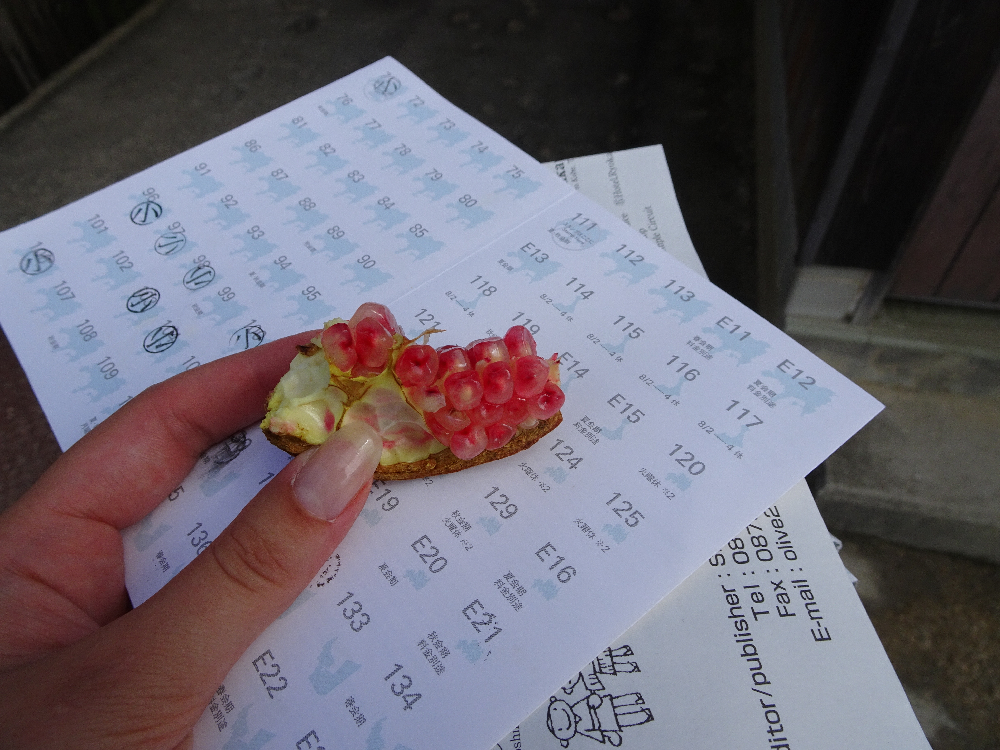
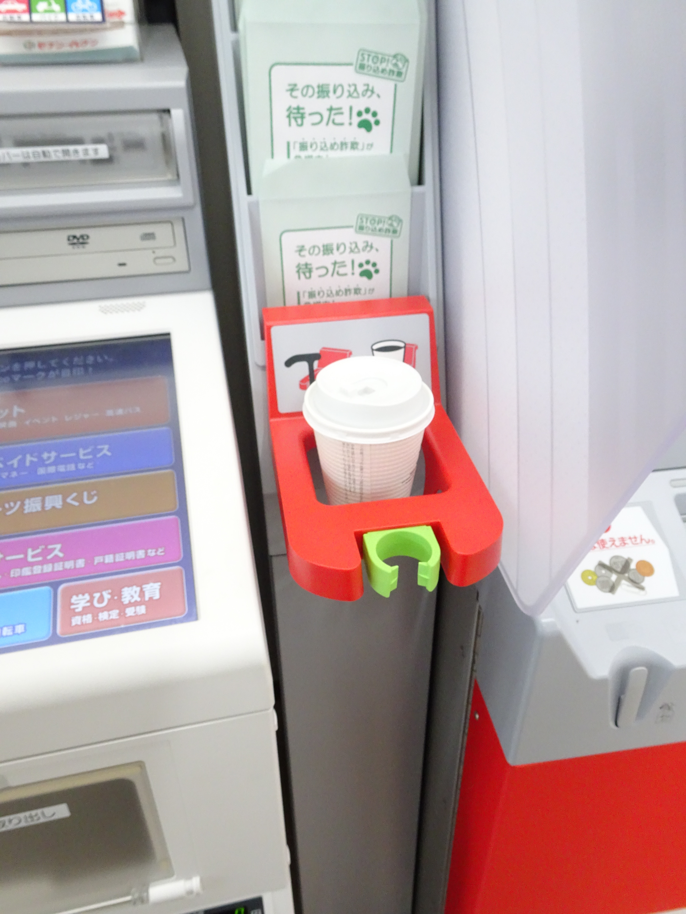
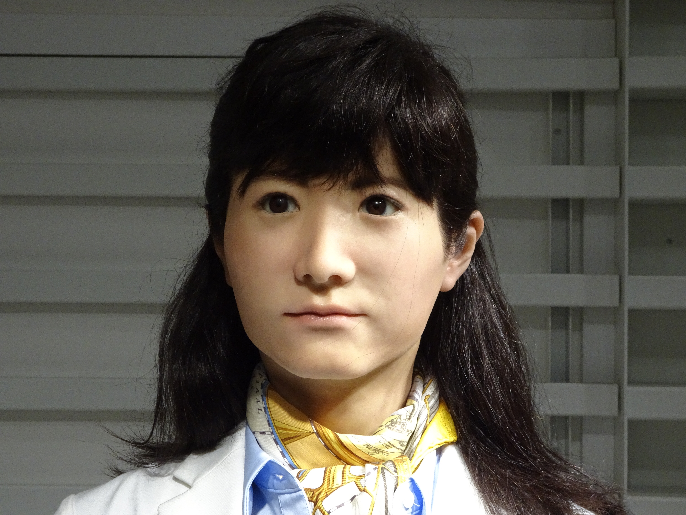
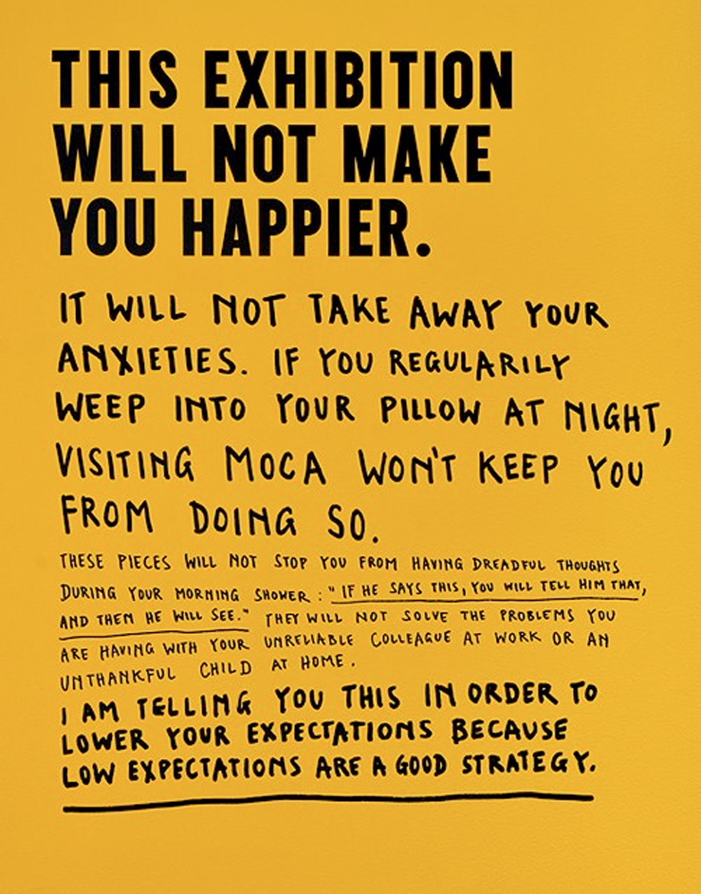
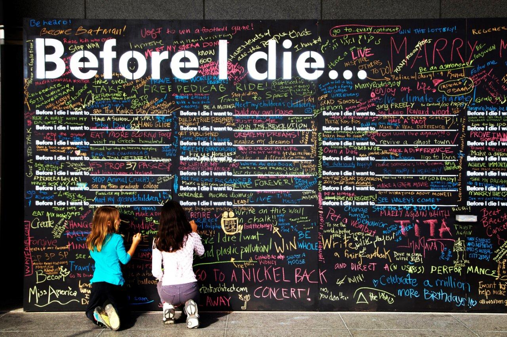
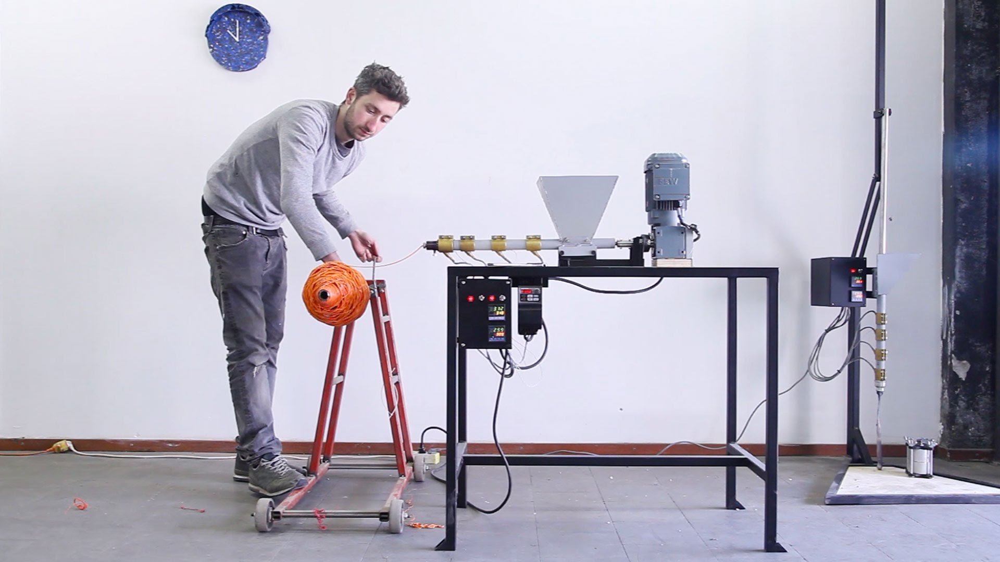
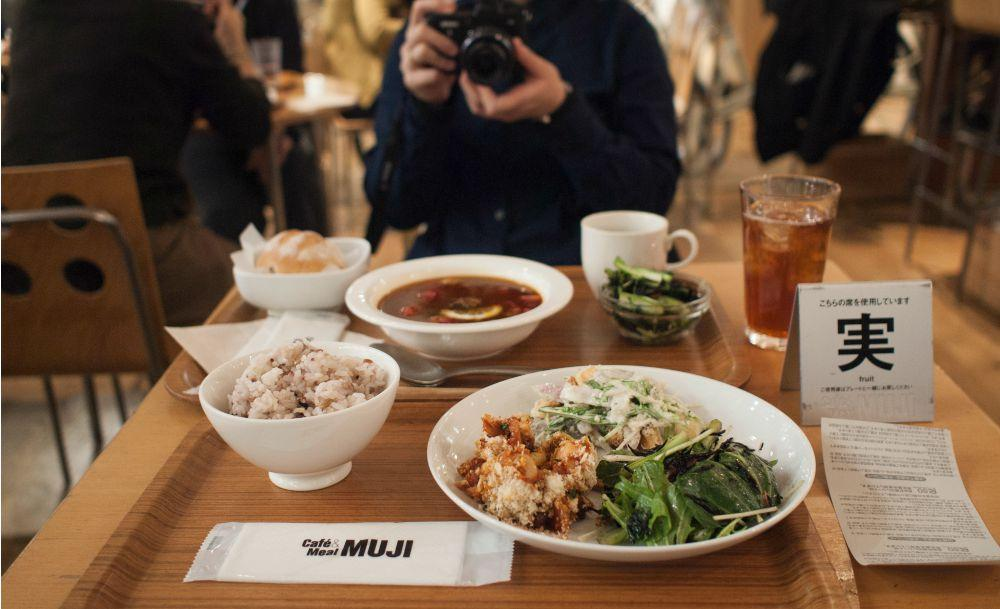
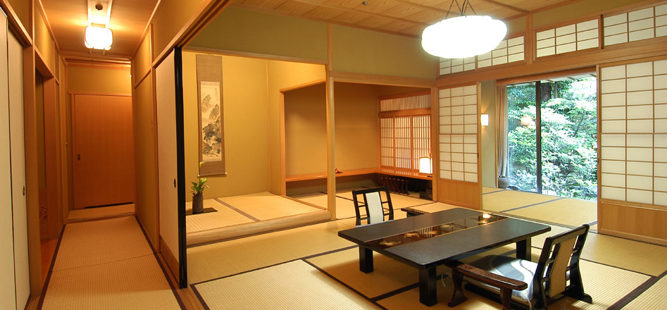
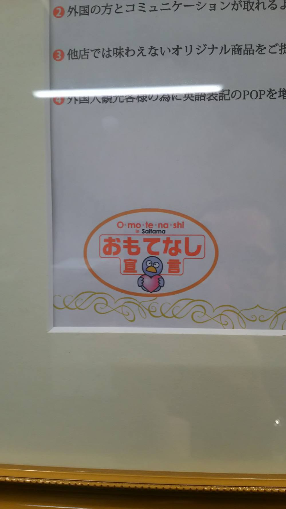

Hospitality has always been a fascination to me. It started with the kindness my parents always showed throughout my life. Things like inviting people for dinner, or letting my friends stay over and taking care of them as if they were their ‘temporary children’. They showed love to everyone around them and when we were buying groceries at the market they stopped almost every five minutes to talk to acquaintances. I admire that openness my family has. Habits I gladly took over when I became older.
Gestures like my parents’ or even from strangers I encountered on the street made me wonder, where does that kindness come from? What forms of kindness and hospitality are there in this world? Somehow from my interest for Japanese culture I learned about ‘omotenashi’, the grandest form of hospitality in Japan.
A dream to go to Japan blossomed inside me and after my first holiday there that interest grew into an almost obsessive fascination. I had experienced omotenashi and I wanted to have more of it! Last year I finally took the big step that I have been looking forward to for a long time and moved to Japan for three months. In Tokyo I did an internship at a Graphic Design studio and made several short trips around Japan to research that fascinating concept of hospitality.
However, my love bubble had developed some cracks. It struck me like lightning when reality showed that this art of hospitality was not what I had expected it to be. Suddenly all this kindness had become like oil floating on a watery surface; strict rules that the Japanese live by; gestures they make because they have to, not from their hearts. At one point, omotenashi in my opinion had not so much to do with the Japanese culture I encountered. All that helpfulness in shops, restaurants and hotels is great for tourists, but once you live there for a longer time you see that it is just a way to make foreigners ‘like them’.
The behaviour of Japanese people can be somewhat contradicting. At one point they are extremely social and loyal to their company, working hard to have this society run as smooth as a bullet train, even offering tourists the best possible service. On the other hand many seem to have a closed personality, not sharing their feelings with others, not daring to take responsibilities, not remarking other people’s flaws, even though it might be helpful from time to time. Kind gestures are sometimes not even truthful. Japanese offer business cards as leafs falling from trees in autumn, though when they say you should swing by their house when you are in the neighbourhood, they do not actually mean it. The interesting thing about this situation is that many Japanese I have talked to even admit all I have noticed. So apparently it is not just my personal view upon this culture, but the Japanese interpretation of their own culture as well.
Anyway, it is not that I do not like the way they treated me, or that all Japanese only do it because they have to. I often experienced true hospitality from Japanese families, colleagues and roommates, as well as I received the same kindness from European colleagues or random strangers from Mexico, US or Germany. During my stay I even met some Dutch people that gladly took care of me. So concluding from that, I no longer take the concept of omotenashi as a specific Japanese lifestyle, but rather as a kindness from the heart that can be experience all over the world from every living being. It is this concept of anticipating the needs of others in order to develop for a better future, that I would like to apply into graphic design, so it could contribute to the benefit of our society.
Adding to this experience in Japan I realised hospitality does not stop at human services. There is more to it. The way signs are hung, menus in restaurants are written, different languages are provided... It all says a lot about either a person, a country or a company. Some things look impossible for people to understand. And sometimes the people are unable to help you (due to lack of English skills.) This either requires an update
of the information or a tool to help you better understand. Eventually hospitality does not seem only to be something from human directly to human. It could also be experienced through a form of design in the broadest sense.
As a graphic designer I wonder in what different ways we can use hospitality. What are the possibilities to apply this art of hospitality into the world of design? Or can we translate omotenashi to another way of communication? In this thesis I shall define my understanding of omotenashi and how it can be experienced in Japanese culture. That will be followed with an observation on how designers have used a form of hospitality in their own way.
It might be important to define hospitality to begin with. What is hospitality? Is it the woman behind the counter in a restaurant, helping you with your order? Is it the man at the train station, almost missing his own train because he wants to make sure you will catch yours? Is it the woman who promises to take care of you so you won’t feel lonely? Or the colleagues who speaks Japanese to you, because they know you want to learn it?
In the Oxford English Dictionary, hospitality is simply described as ‘the friendly and generous treatment of guests or strangers.’ Yet, hospitality can be much more than just good treatment. It can be the charity for the people that are in need. The nobleness of lifesavers. The graciousness of a landlord, king or president. Serviceability in cafés, regarding size or profit. The unselfishness of the young child. The sociability of the colleague or fellow- student. The self-devotion of the artist. It is the cordial friend, neighbourliness, a warmth and welcoming family... It is all around you.
Hospitality is about letting yourself be vulnerable and open for newness and change. To have an open mind and non-judgement towards other cultures. To show trust, compassion and under- standing. Trying to anticipate the needs of others and do your best to provide them with the necessities. Humans help each other, no matter in which country you are, what language you speak or how much time and effort it takes. There are many forms of hospitality, that vary between different cultures. Since I was almost obsessed with the idea of Japanese hospitality I shall explain to you what I have learned about this cultural phenomenon.
OMOTENASHI
Omotenashi, the art of selfless hospitality. A term hard to translate in any other language. It can be interpreted in different ways. Some say it means ‘service without expectation of reward’, others translate it into ‘kindness from the heart’. A few Japanese even explained it to me as simply ‘love us’.
Originally the concept of omotenashi is said to come from the traditional Japanese tea ceremony. The host would entertain and serve the guests as generously as possible, without expecting anything in return. It is a selfless form of service that has found its way in many aspects of Japanese society and can still be found to this day. The Japanese have a high sense of responsibility (sometimes so extreme that they are afraid to take the respon- sibility and to make decisions) and try to anticipate others needs so they can respond in the best way. This philosophy can be found in the effort that is put in preparations and arrangements. It is the fuel for the behaviour and attitude towards guests. Omotenashi can even be found in the way people dress to certain occassions.1 As a designer I notice the way it is also used in their designs.
Generally this word is an ideology used for customers. Japanese hosts would provide the customers with the best service. However, after living in Japan for three months I realised the Japanese live by the rules and omotenashi is one of them. True, they are very kind and helpful. Though, when you look closer and long enough you notice that it is mostly towards tourists and only when they need to. This realisation changed my whole view on the omotenashi principles. The word might be Japanese, but for me the concept is nothing specific to only the Japanese culture anymore. At least not how I interpret the word. The essence, to me, is not just about providing good service, but also putting your heart and soul into it, and showing hospitality not because you have to, but purely because you want to. It should not just contain a service on the spot, but rather a continuous solution. It should be possible to apply this kind of philosophy or lifestyle into any field and any situation.
PERSONAL EXPERIENCE
Hopefully you do not understand me wrong when I express my experience regarding the Japanese hospitality. It has not been a negative experience at all, just a revelation that made it possible for me to look objectively to this interesting subject. I would like to clarify my experiences with three examples:
Firstly, the most general way of hospitality in Japan. Hospitality by rules. It was even an extreme form of hospitality, as I am about to explain. During my last weeks in Japan I went to Disney Seaworld. Wherever we went, employees would walk around and show everyone their brightest smile, waving continuously and wishing us a beautiful day. Without interrupting this seemingly ritual, they walked through the park. It is hard to understand how they trained their cheeks and arm muscles enabling them to do this successively throughout the day. Even though their smile looked the sincerest you would ever see in the park, it felt a bit like pretence after a while.
Employees at Disney Seaworld, Tokyo, waving non-stop at the visitors.
Secondly, and a little less ‘because they have to’, two stewards from PeachFly helped me when I missed my flight. There was only one seat available on the next flight, that would be boarding in an hour. So with minutes rushing by we tried to book that flight. There were many difficulties as the seat first seemed to be reserved; later I could not book the flight because the internet on my phone did not work, but the woman generously made an exception and used her phone to book instead; then I apparently exceeded the limit of my creditcard, so I had to contact my mother for her creditcard (for which I was lucky to be able to reach her, since there was a time difference of eight hours)... Only half an hour to spare, all the desks were empty and only the three of us were left. They felt the pressure as much as I did, or perhaps even more as they cheered even louder than me when I was finally able to book the ticket. I thanked them as often as I could and rewarded them with a little present that I always carried with me for gestures of hospitality like these. They were overjoyed and even wrote down very detailed where I had to go next to be in time for boarding. At the gate the woman passed by and thanked me for the present. She greeted me a hundred times before I was out of sight, safely inside the plane. Undoubtedly helping me was their job, but they went as far as using their own telephone and trying every possible option in order to get me on that flight. They were not obliged to do so much for me, yet they did, and I sensed they showed me the true hospitality from the heart.

Helpful stewards from PeachFly airlines. These people helped me through it in the last minutes before the next flight. Yes, I was allowed to make this picture.
The last example is a very clear gesture of generosity. During my stay in Japan I visited the Setouchi Triennale. You could buy a card to get free passage to most museums and exhibitions. With each visit you would receive a stamp. At one ‘checkpoint’ I did not only receive a stamp, but also a piece of pomegranate. Not sure if I looked really tired or hungry, or that the woman placing the stamps gave it to everyone, but it was as if she definitely anticipated my needs for food well. Her generosity had created a smile on my face for the rest of the day.

Besides the common stamp the woman gave me a piece of pomegranate.
HOSPITALITY OF THE WORLD
Obviously omotenashi is not the only form of hospitality on this planet. There are many different countries with different cultures that have their own philosophy regarding behaviour towards others. After omotenashi I learned about the Ubuntu. A rather fascinating philosophy that has its origin in South Africa and can be translated to “I am what I am because of who we all are”2 Is that not the truest form of a sincere kind of unity? It is a way of understanding one-self in relation to the rest of the world. You only exist because the others exist and your individual success and fortune is less important than that of the group.
In this world we are all interconnected. Therefore understanding each other is of great importance, in order to live together in harmony. There is so much more to discover and I shall not stop my search for other ways of hospitality. Even though I might stumble upon the same realisation I had with omotenashi: that it is perhaps not as magnificent and perfect as it seems to be at first glance. That it has both its positive as negative sides. However, these different points of view makes it even more interesting to experience. You take the good with the bad and learn from it what you can in pursuance of an improved society, and in this case, better design.
Hospitality does not translate itself only from human to human. It can also be through the form of design. Information in a restaurant’s menu, on the signs at a train station or the text in a flyer can also become a form of hospitality. If the information is clear enough for the guest, tourist or customer, they can benefit from that information. However, if information is only provided in one (unknown) language or contains too much information which makes the core of the message becomes unclear, this might result into a distant feeling and probably the opposite of what omotenashi stands for. Again I shall describe some examples from the Japanese culture, to dive further into the way they combine design and hospitality.
INFORMATIVE DISAPPOINTMENT
Design can also be confusing and disappointing. Several times I experienced being a little lost at the train stations in Japan and hoping to find some information regarding the schedules. Above all the rapid moving heads rose a sign with big black letters: INFORMATION. Instantly I tried to make my way through the mass towards the bulletin board. When I finally reached my destination I came to the bitter realisation that it was only the title that was written in English. All the other information was in Japanese. How on earth, as a tourist, would I be able to get any understanding from this, to me, unknown language?
The most gnawing question was: Why would they even take the effort of translating the title into English if the rest of the text is not understandable for the English readers? What sadistic form of hospitality is this? It is understandable that in the mountains the Japanese do not provide information in English. Logically restaurants in non-touristic places only have Japanese menus and ryokans (Japanese traditional hotels) have their toilets and bathrooms marked with Japanese characters. This is all because English is not the second language in Japan and not many people speak, or dare to speak, English. However, in a metropolis like Tokyo you would expect more information directed to tourists. You would actually expect the information written in several different languages, if you think about the way of hospitality the Japanese love so much. Unfortunately that is far from the truth.
When there is finally some English text provided, let’s say in advertisement or menus, you would not know where to start reading. Japanese have two types of design: the pure and clear, simple design, and the extremely colourful design full of text, images and illustrations. That latter is the most common in Japanese daily life. You have to wriggle yourself through many layers of useless information before you get to the core.
In other words: perhaps not such a tourist-friendly country after all? Not in the places you would at least expect it to be. Even though they do their utmost to help you when you enter their shop or got lost on a train station, it seems to lack some develop- ment here and there regarding information, even in their designs.
PRACTICALITIES
The Japanese, however, are very good with designing nifty products. All crazy inventions you never knew you would ever need, (and perhaps will never need, but just want to have for the fun of it.) Things like little egg-shaped boxes to carry your egg in so it does not get squashed in your bag (all designed cutely, because that is what Japanese love); robot cleaners that work as scavengers in the office, bumping up to your chair and feet as if it were a real pet; a cupholder next to a cash machine so you have both hands free to take your rolled out money... Yes, I have seen it all. Even so, how crazy all these inventions may sound, they are very practical and gratify (sometimes unknown) needs.

A rather practical form of hospitality through product design. Cup holder at the ATM in a convenient store. They provide you in your needs, a solution for your cup in this case, without you asking or without you realizing beforehand you would need it.
HUMAN INTERACTION
Then there is a point where we lost all human interaction. It is perfectly fine that hospitality is transferred through design, but should design be a total replacement of interaction with humans?
A woman at the information stand, greeting you with blinking eyes and a modest smile. Ask her your question and she will answer in perfect English. However, when you try to make jokes or start asking difficult questions that require detailed answers, the woman does not respond. She merely blinks her eyes and moves her head a little from left to right. This lifelike woman had been the creepiest robot that greeted me. She was, however, a rare encounter.

Lifelike robot at the information helpdesk in Odaiba, Tokyo.
In many Japanese shops visitors are welcomed by a robot called Pepper. Made of white solid material, with the height of a 6-year old and colour-changing led-light eyes. Sometimes they are dressed up like a true host. Just one problem for foreigners: Pepper only speaks Japanese. Or perhaps Pepper was able to speak English, but we just did not know how to ask the right question or to find the right button in order to change the language. In that case, not so customer-friendly. The only thing it did to us was freaking us out, for Pepper’s head would follow us wherever we went, and its lifelike little hands would twist and turn as if it were from a real person. Luckily it could not walk or ride. Even though the Japanese try hard to create robots that look like humans that are programmed to answer your (simple) questions, the robots cannot live up to the true hospitality of human beings. They cannot emphasize with human beings or anticipate the wishes of the person who is approaching.
One step too far in the wrong direction of hospitality, I would say. Nice attempt, but not yet sufficiently working for foreigners that are not accustomed to non-human encounters. Besides, it does not feel personal at all and since the Japanese hospitality is all about ‘from the heart’, it would be very misplaced, since robots do not have a heart.
Hospitality in design is rather a form of inviting people and creating a space where strangers can become friends. Where one can feel at ease and dare to be vulnerable. To come to understand how forms of hospitality have already been used in the process of design we can look at different designers with their own way of implementing hospitality in their projects, consciously or unconsciously. How did these designers use a way of under- standing and providing possibilities in their projects?
STEFAN SAGMEISTER
If we are talking about vulnerability ‘The Happy Show’ by Stefan Sagmeister* would be a good example. Not so much for the public becoming the vulnerable object, but rather the designer himself. Perhaps vulnerability might not always be a quality, since critics might find it annoying and can take it for self-pity. Even so, Sagmeister did pull it off well in The Happy Show, where he invited people to be part of his thoughts; offer them
a look in his world. His intentions are probably to show people something they perhaps had never thought about.
Although The Happy Show3 was a collection of Sagmeister his own views upon the topic ‘happiness’, it did ask for the engage- ment of the public during the exhibition. It was through playful- ness that he carried on his research. With black on a yellow background he displayed emotional infographics, big headlines, fun videos, interesting and interactive installations and much more. With all these different representations of happiness he intended to show visitors his way of thinking.

‘The Happy Show’, www.elizabethhamiltoncollection.com
Sagmeister is dedicated to his works and does more of these dedications of his mind and body in some other projects. For example the AIGA lecture event poster from 1999, where he carved text into his body. Or at his 2003 exhibition ‘Sagmeister on a binge’ you could see before and after pictures of him after he had stuffed himself with a hundred different types of junk food which made him gain more than twenty-five pounds.
TRUE
Sagmeister had mentioned David John Riggins**, artist name TRUE, in an earlier TEDtalk.4 Riggins is an American artist, designer and filmmaker and is seen as ‘leading design innovator’.5 Why Riggins makes an interesting example for my research of hospitality is that he uses natural surroundings as an art space. By avoiding galleries and museums he tries to employ his idea that art should be displayed for a bigger public. I think it is a good solution for free and open art, available for everyone.
One of his occasional ‘guerilla’ projects was called ‘Life Instructions’.6 Executed in a subway where he and some of his friends would place another sign over the original signs. The signs contained funny and sometimes provocative messages to trigger public to think differently and pay more attention to their surroun- dings and the details it includes. However, people do not often pay attention to these signs so the change was not always noticed.
There is something inimical even so. He violates public space and makes probably necessary information unreadable. Nevertheless, with this Riggins shows a sort of selflessness through being vulnerable, by doing things that can get him caught. He puts the need to ‘inform’ others above his own safety. Atop of that he shows loyalty towards his friends. When his friends would be caught he wanted them not to be put in a difficult situation, therefore he provided them with a ‘volunteer card’.
However, I think Riggins is not fully vulnerable. He wants to give something to others, except for his identity. He tries to remain out of sight from the press. Before, he used a pseudonym ‘str8up’ in order to sustain his anonymity, and to not lead away the attention from his work to himself, as well as a protection from getting caught for violating the government property.7
CANDY CHANG
Another artist/designer who makes use of public spaces is Candy Change. Her work, in my opinion, lives up closest to narrowing the boundaries between the individual and the collective. She picks ones brain when it comes to the psychology of the community’s involvement. The public is invited to reflect on themselves and their environment, and what the relationship is between the public space and mental health of both the individual as the collective.8 Her projects are open for public and are mainly interactive experi- ments that offer ways to start a dialogue with and between the local community.
‘Before I Die’ is one of the most widely spread projects, since it had been set up in more than seventy countries. This is a great example of a participatory public art project. By stencilling the words ‘Before I Die’ repeatedly on a black wall with a set of lines for public to finish the sentence, she creates a space where everyone is invited to reflect on life and death, and share their own envision with others.
The beauty of this project is that it did not end with just one wall. As a matter of fact, it is a never-ending project. While people are asked to participate by writing on the wall, they are also free to replicate this wall somewhere else. Even better, this is a wonderful example of hospitality by creating opportunities: Chang offers a guide on how to set up your own wall including five easy steps, a checklist of what you need and a stencil.9 This way a project can become an adjustable and transmittable form of hospitality.

The 'Before I Die' wall. www.shineonstpete.com
Furthermore Chang gives people, who are interested to set up their own project, the freedom to use this concept. Questions from the website’s FAQ like “Can I change the wording of ‘Before I Die’?” and “Do I need to follow the exact composition of the original wall?”10 are answered with the motivation that you can do whatever you feel inspired to do or whatever feels right. In every way this project is an invitation to let your own creativity or motivation run free and execute it yourself in any way you want. Now more than 2,000 walls have been set up and still people are using this concept. In The Netherlands there have been three ‘Before I Die’-walls (recorded on the project’s website). One in Amsterdam, Eindhoven and March 2016 in Almelo.
“Before I die I want to meet the aliens.”
- Eindhoven, September 2011
Since people could adjust the text freely, there had been some ‘remixes’. In 2013 the community of Ermelo raised a wall with the title “What makes Ermelo the place to be?” And in Leeuwarden the students of Noordelijke Hogeschool raised a temporary one in November 2011 named “Before I Graduate” which left mostly very student-like answers, but also weird, creative ideas, sad stories and ambitious plans.
“Loose my virginity.”
“Have a naked photoshoot.”
“Eat a shark.”
“Find friends who won’t leave me.”
“Have my own company.”
Besides ‘Before I Die’ Chang raised many more of these projects that ask for engagement and where remembering and reflecting are important aspects. She gives opportunities for reflection and developing your own ideas of life. It might also be an attempt to point people, or actually let them point themselves, towards their goals, without being pushy or demanding. Everyone can join in their own pace. The goal for most artists like Chang could be that they are able to change something in society. That people in this world look differently upon their lives and what they still would like to achieve before it is too late. It reveals ambition, fear, happiness, difficulties, and many other feelings that someone might not have been aware of. Hopefully it creates self-reflection but also empathy and compassion towards others. In a way hospitality has been used for a design purpose and translated back into hospitality that is again passed onto another. That to me is the right way to invite people and pass on your message. Something I would like to aspire in my graduation project.
DAVE HAKKENS
When thinking about designers that would like to make a change Dave Hakkens is a great example. Not only because he now lives in the city that I grew up in, which always makes me really proud to say Helmond delivers great people, but because he has found a way to offer possibilities that can develop our environment. Hakkens graduated in 2013 from the Design Academy in Eindhoven. He won the design awards with his project ‘Precious Plastic’.11

Dave Hakkens and his 'Precious Plastic' recycle machines.
www.youtube.com/watch?v=76AFNIxYjUE
The project introduces a way to recycle plastic yourself. On the website tutorials are provided on how to build your own recycle machines. Hakkens tries to encourage the public to become conscious of the enormous plastic waste this world now contains and to do something about it. Consciousness is a form of hospitality, as it is anticipating. Hakkens anticipated the need, not so much of the people, but rather of Mother Nature. He calls for others to become aware of what is happening, and not by scattering around some sad whiny cries, but purely with an offer that cannot be ignored. Same as Candy Chang, Hakkens offers the public a free setup of how to make your own plastic recycle machine and how to make filament (ink for the 3D printer.)12
“People can play around, start a business and recycle like rockstars.”13
Yet, it is not something everyone is able to do. For instance, I would really want to recycle my own plastic, however I do not have the materials, let alone the money to buy the materials, nor have I got the space to store these machines. Which makes it quite complex to fabricate yourself. Nevertheless is this a very exquisite pursuance and serves useful opportunities.
BILL MOGGRIDGE
An early example of how the helpful thinking of one person has translated itself into design is from Bill Moggridge. Born in London, 1943 as William Grant Moggridge and later studying Industrial Design at Central ST. Martins College of Art and Design, Moggridge worked in his adult life as co-founder of IDEO. Not only is IDEO one of the most successful design firms in the world, it was also one of the first to emerge the design of software and hardware with industrial design. Some people see Moggridge as the ‘father of interaction design’.
Interaction design is directed to improve the using and understanding of digital projects.14
In 1982 Moggridge worked for Grid Systems, where he developed the ‘Grid Compass’, the first laptop computer, which was designed to fit the size of a briefcase. At the time the laptop was too expensive for common public with its value of eight thousand dollar. So then it was mainly used by the military and was even present in space shuttles.15
Moggridge his fascination is not the box, but rather the software inside. Apparently that had triggered the idea that design could become more than just some beautiful and convenient object. He thought more about providing others something that would meet the experience.14 Something that was practical and would satisfy the needs of the users. He anticipated on the (future) needs of society and developed products that nowadays we cannot do without. In an interview about his book ‘Design Interactions’ Moggridge said he “would have to learn to design the interactive technology instead of just the physical object.” Here he was clearly aware of how important interactions were in order to provide in the consumer’s needs.
When working for IDEO, Moggridge changed his focus from specific projects to working on the process for design, by having engineers, designers, anthropologist and psychologists teaming up. He also started to teach on the importance of approachable design in daily life. With the Grid Compass Moggridge offered a great development in the digital technology, something that we nowadays still profit from. He started to think about the user and their needs, he showed them good intentions and understanding. In return he was absorbing new information, techniques, ideas, opinions, in order to develop his design and with that improving the user experience.
It is not a matter of which places his ideas could work. For it obviously has already worked. All over the world laptops have been developed and practically everywhere people profit from that. His idea about creating good experiences for the user is an idea that many brands use in designing their products. Luckily there is no patent on being inspired by other people’s ideas and philosophies.
BRET VICTOR
“I have committed my life to inventing a dynamic medium for human beings to see the unseeable, discuss the undiscussable, think the unthinkable.” 16
Bret Victor says it himself on his website: he is committed. Commitment is a form of hospitality whereas you offer your loyalty and help to someone or something else. On top of that he provides people a new space where they can develop. Besides that he has an MS in Electrical Engineering, there is not much personal information to find about Victor. Only in his own words he writes an entire philosophic transformation through his studies and work-life. He ends that personal philosophy with:
“The True Way transcends the minutia of Skill. There is no ‘Technology’. There is no ‘Design’. There is only a vision of how mankind should be, and the relentless resolve to make it so. The rest is details.” 17
Yes, he says there is ‘no design’. This should have let my designer-heart break and dissociate from these hard words. Though I can relate to having a vision. Truth is, Victor has more visions. For one, he represents the belief that we should actually use computers for exploration and communication, but in such way, that all possibilities of a programmable, dynamic and interactive medium can be achieved. Easier said: to use programs in a more understandable and effective way. For example, how coding could feel more ‘like doodling than writing’ and that work normally done by your mind, would become work you could do with your body.
Victor describes his goal as ‘intention to invent a humane medium in which the thinkers of the next century will see, understand, and create systems.’ Though there can be a division in a short-, and long-term goal for Victor.18 Short-term: to make innovations regarding the way people learn, understand and create. Inno- vations in tools or products to equip scientist and researchers to find their cures and solutions; developing tools for artists to help them create better work; creating platforms for companies to easier share their knowledge or products. Ways that might not seem available right now. On the longer term he aspires to ‘fix’ this so-called immature society. He finds himself in some sort of dispute against the consumerist society and by providing the right tools he offers people the opportunity to join. The goal is to make sure the individual gets back their control, self-respect and responsibility.
Genuinely Victor provides the people with new ways to develop themselves. When a person dedicates himself and all of his time to others, that would be a definition of hospitality. He tries to invent a medium thus the next generation can see, can understand and are able to create systems. This is his hospitality: providing the next generation with possibilities. For future society to function well he aspires to make people able to ‘see, understand and think what needs to be seen, understood and thought.’
By giving innovations that can be applied to tools or products to help others, like scientists and researchers, they are able to make progress in what they do. All for the benefit of (next generation) society. What is important is that he gives a new way, perhaps the right way, of thinking. He does that with the idea that ‘people can think thoughts that they couldn’t think before.’
It is his philosophy and his goals that can be useful in many aspects of design. Atop of that Victor keeps his eyes on the future. He hopes to make this world a better and mature place for our next generation. A virtue of hospitality is that men anticipates one’s needs, and Victor anticipates this generation justly enough to prepare for the next.
KENYA HARA
Since the whole starting point of my research on hospitality came from the Japanese culture, I could not leave out the utter most important designer from Japan.* Hara had been one of my main inspirations, and still is when I make a new design. The simplicity in his design with powerful visual communication is a refined skill Hara has mastered.
When I travelled around Japan I often visited a MUJI café, where Hara has been the advisor and art-director since 2002. This delicate design that seems very basic, yet elegant, is what draws you to spend hours in their cafés and shops. (Despite the fact that the prices are a little above average and a coffee with pie can cost roughly more than ten Euros.) When looking at the interior I wondered, what makes MUJI so attractive to the public?

Expensive but delicious food at MUJI café&meal, Japan. www.sg.asia-city.com
“I don’t believe cities are created by great urban designers. Cities are made by the desires of people. What designers are able to do is provide a little awakening that might change what people want from a city. That will eventually lead to a [larger] change.” 19
In an interview from the Japan Times19 Hara mentioned the philosophy of “education of desire”. This philosophy set ones sight on how change is made. That it is not per definition the designer that makes the change, but encourage people to think about what they want to see differently. A designer considers these opinions while designing. This philosophy is maintained in his work at MUJI.
“Desire and education are both words that seem too direct, but I haven’t found any better. . . . Design must be a slow, quiet education that gradually exerts influence on the quality of need — the standard of the desire.” 19
Hara is very focussed on the idea that design should implicate what the public asks for. It is a learning process. Good design does not just come from a designer suddenly having a great idea. It must have been anticipation and understanding, a perhaps rather long way of observing before finding solutions. Plus, in his book ‘Designing Design’ he writes that he is ‘not interested in creating messages against something,’20 he rather thinks design should take effect in a planning process.
With this concept of ‘educational desire’ the Japanese essence of simplicity is woven in the design of MUJI, where ‘This will do.’ is fundamentally aspired. It teaches the people to not think about all the details and extras a towel can contain, but adequately agrees that a plain towel ‘will do’. He believes that this idea can be realized by an awareness that goes beyond the beautiful object and more towards the experience of it, quite the same as Bill Moggridge thought of functionality before appearance. In Hara’s opinion, the future of Japanese design should concern better questions and not so much focus on forging better solutions. (Which is actually in contrast with the ideas of developers like Bill Moggridge and Bret Victor, who rather aspire solutions.)
Hara reflects on how Japanese design can be improved by revitalizing the traditional aspects of Japan’s history into a modern society. That of course is followed by further develop- ment for the future with an eye on designing products that are not just beautiful or functional, but contain cultural qualities as well. That might be the very reason why MUJI functions so well. Especially in Japanese culture, where the Japanese both care for newness and development, as they like to hold onto their traditions.
“I’m not trying to go back to the past and say it’s beautiful and wonderful but, just like unearthing minerals, I’m trying to unearth those resources from the past as energy to propel us into the future.”
If you have ever been to Japan and visited a ryokan, a traditional Japanese inn, you might have experienced that it is a very un- surpassed experience, nothing compared to abundant Western style hotels. It offers exquisite service, the true omotenashi in a traditional way. This provides a richness in all its simplicity. Much more richness than the abundance of the West can ever target. Unfortunately ryokans are becoming a ‘dying phenomenon’ for it is quite expensive and customers rather pay less money for exaggerated but not qualitative service.

Ryokan in Japan. www.motivistjapan.com
This reflection on traditional Japan brings me back to the omotenashi that I’ve been reaching out for. Unfortunately the essence of Japanese hospitality has been turned into a rather consumerist concept. Which is quite sad, for the whole idea of unselfish service is what made Japanese culture so interesting in the first place. Though I can agree with Hara’s ideology of reaching back on traditional behaviour, to learn from the past and use that as a foundation for better design in the future.
Can we apply hospitality into the world of design? Eventually there seem to be many ways to interpret hospitality. Many things can be part of the concept of omotenashi, from the designing of tools, to offering solutions or even placing a figurative mirror in front of the public, in order to encourage them.
Developers like Bill Moggridge and designers like Dave Hakkens proved that their form of hospitality can be of use or meaning to others in this world. This is possible because they learned to anticipate on society’s needs, offer possibilities and by designing tools that contain efficiency. Not only to make a change, but to help society develop on its own strength. But with the design of a functional machine comes more than just offering practicality. Hakkens for example took a few steps further by explaining how to make your own machine. Hospitality in design is about offering opportunities and possibilities together with the solutions they created.
Since hospitality can also be interpreted in the broadest sense it is not difficult to find a way to offer something to another being (whether it is a human, animal, or Mother Nature herself) without receiving something directly in return. With all good intentions you can create an environment, a space, for the public to feel comfortable or feel like they can move forward. Perhaps a company like MUJI might offer consumerism as well, it is still using the Japanese omotenashi to form a comfortable place and contains the essence of what Japanese hospitality characterized in the past.
Many projects have been done by people from different disciplines. What they all have in common is that they offered the public something, the public participated and eventually continued the amelioration. People can be lazy or uneducated, but nevertheless be willing to make a change. They need to get a little push to make that step and that is where designers are for. To help a hand in crossing that bridge. In valuing lives, in solving that riddle.
Though it has to be taken into account for which kind of public you are designing and what the results might be. As where the Japanese train stations do not provide more information that just the word ‘INFORMATION’. Here the hospitality might take a few steps higher on the steps of helpfulness. Necessary information should be availabe for everyone new to the situation.
So yes, it is certainly possible to apply the art of Japanese hospitality into the world of design. A designer should not only design a handy product or confronting event, but make it an accessible experience for the public as well. It is difficult nowadays to get the attention of this digital generation, only looking down on their phones. So what thrives these people to look up? Something that is inviting and capturing. Things that make you think or help you further. It does not have to be presented on a silver platter, as long as the platter is an unforgettable (and perhaps life-changing) experience.

Omotenashi approved certificate logo.
1 Takasaka, H. (2007). Eiji Press, Tokyo, (via Kerstin Blanchy, ‘In- terface Design based on the philosophy of Japanese Hospitality’) 2 ‘Words to Live‘, written by Jen Boudreau, on June 2, 2012 motivationinspirationandlife.wordpress.com
3 thehappyshow.tumblr.com
4 Stefan Sagmeister (Feb 2004). “Happiness by design”. Recorded and published at www.ted.com.
5 www.worldlibrary.org/articles/true_(artist)
6 www.trueart.biz/cityarts/life_instructions.html
7 www.truestoriesproductions.com/about/
8 www.candychang.com/biography/
9 www.beforeidie.cc/site/build-your-own-before-i-die-wall/
10 beforeidie.cc/site/blog/category/frequently-asked-questions/
11 preciousplastic.com/en/
12 preciousplastic.com/en/videos/build/
13 ‘Dave Hakkens updates open-source Precious Plastic recycling machines’ by Emma Tucker, April 14, 2016 www.dezeen.com
14 ‘William Moggridge, Designer and Laptop Pioneer, Dies at 69’ by Leslie Kaufman, September 9, 2012 www.nytimes.com
15 www.designinginteractions.com/bill
16 www.twitter.com/worrydream
17 www.worrydream.com/#!/Bio
18 John Pavlus, Dec 1. 2014 www.medium.com/re-form/ the-utopian-ui-arhitect-34dead42a28#.fk8yruo2i
19 ’Kenya Hara: the future of design’Jan 2014. by Cameron Allan McKean www.japantimes.co.jp
20 Kenya Hara, 2007, Designing Design.
Design: Kenya Hara. Published by: Lars Müller Publishers.
BOOKS
Liesbeth Huybrechts, 2014, Participation Is Risky: Approaches to Joint Creative Processes.
Print and binding: Ten Brink, Meppel.
Design: Metahaven. Published by: Valiz, Amsterdam.
Matthew B. Crawford, 2015, The World Beyond Your Head. Published by: Farrar, Straus & Giroux.
Meredith Davis, 2012, Graphic Design Theory.
Design: Deborah Littlejohn. Published by: Thames & Hudson.
WEBSITES
Margared Gould Steward (March 2014). “How Giant Websites Design For You (And A Billion Others Too)”. Recorded and published at www.ted.com.
“The Japanese Web | Design with Omotenashi”, written by Thabo Mbuyisa, published on January 4th, 2016. www.designmadeinjapan.com
SYNONYMS FOR HOSPITALITY
Oxfort English Dictionairy Oxfort University Press, 2012
Het Groene Woordenboek, door André Abeling Uitgeverij Het Spectrum B.V., Utrecht, 2002
Etymologisch woordenboek, door J. De Vries en F. De Tollenaere Het Spectrum B.V., 1991
Dikke Van Dale
Van Dale Lexicografie bv, Utrecht/Antwerpen, 2005
www.dictionary.com
www.thesaurus.com
www.collinsdictionary.com
Omotenashi is the art of selfless hospitality, a way of life that is known in Japan. The host anticipates on the guest or customer’s needs and offers every visitor a once-in-a-life-time experience. According to the Japanese, the essence of omotenashi is to put your heart and your soul into the service that you provide. This concept of hospitality has been my inspiration when I started writing this thesis. In August 2016 I went to Japan for almost four months to experience this way of treating others for myself. There are however many other approaches to hospitality and it is practiced differently throughout the world.
Perhaps the most obvious form of hospitality is from human to human. Though hospitality can be translated or passed on through technology or design. Since I find speculating about this topic more than fascinating, and being a graphic designer in the making, I wonder how hospitality can be (or already is) applied in the world of design. Can we learn from concepts like omotenashi to create better design projects? How do we anticipate the needs of the public by using gestures like anticipation, understanding and helpfulness?
Living in a time where society begins to show cracks and where the people tend to loose their sense of unity, it is very important that we stay connected with each other and try to understand one another. As designers and artists we can invite the public to become more than merely a spectator. We can trigger them to become a participant. Perhaps not in a physical way, but even mentally the public can be engaged. It is crucial to create a space where people feel comfortable and strangers can become friends. Creating such a space for another being is a form of hospitality and therefore hospitality and participation are closely linked.
How can hospitality be used for the betterment of design?